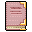

World History¶Ordinary · Other · value 500 gold
- by Wormath Splathershed *
Foundation of the Forgotten Kingdom (year 2300) The first humans, led by Arntuk the Mighty, came from the south in ancient times and established the Forgotten Kingdom. These people, called the Lethgar, built settlements in places where now great towns and cities are located. Nor City and Sullengard were the first to be founded. Then some time later, a few explorers climbed Mount Galmore, the highest mountain in Dhayavar. Due to the elevation and marvelous view, their priests and mages built a sanctuary near the summit where they studied the arts of magic and worshipped their gods.
Rise of Kazaul (year 2177) The insane and powerful wizard called Valugha was obsessed with the notion of creating a portal to another plane. Even though his fellow mages disapproved, he was able to create a portal by consuming the powerful life essence of his brothers and the stored energy in the sanctuary. The sanctuary erupted in an explosion and a large ravine split Mt. Galmore apart. At its bottom, the portal opened, which was soon merely called the 'Rift', and the devastated area around it 'Undertell'. The mountain also spilled out lava like blood coming from a wound and is now clouded in smoke all the time. All kinds of demons and undead emerged into the world through the portal, led by their masters, the 'Kazaul'. The Kazaul themselves were guided by the Eternal Masters who were incredibly skilled in magic and warcraft. Soon the monsters and their masters spread over whole of Dhayavar. However, the portal became unstable after a while and finally collapsed after several decades, but the harm was already done, as thousands of beasts had crept through it into the realm. A short and brutal war was fought. With the loss of nearly all mages, the Lethgar were powerless against the monster invasion and were soon overthrown and enslaved by the Kazaul. The Kazaul imposed a reign of terror on the Forgotten Kingdom. It seemed no one was able to defeat or oppose the Kazaul due to their inhuman strength. Then the Lethgar had to build underground lairs for their oppressors. A large city was built around the deactivated portal and in the natural caves under Mt. Galmore. Also, Carn Tower and the Sanctuary on Blackwater Mountain were built, among countless other underground Kazaul settlements. Even though most Lethgar despised their masters, some showed interest in the rituals and dark sorcery of the Kazaul. As a result, the Kha'zaan (Kazaul cultists), a group of human Kazaul followers, gathered around their masters and learned from them. They were often used to enforce the brutal rule of the Kazaul. Many of the current monsters are living forms that evolved from experiments made during this era, such as Izthiels, Gornauds, Wyrms, etc. By that time, the Hira'zinn, the omen of war, started plaguing the smallfolk.
The War of Dawn and the Rise of Elythara and the Elytharan Union (year 1537) One day, the Elytharan cultists arrived on the shore of the northern sea (Sea of Tears). They worshipped the blinding and cleansing light of Elythara. The Elytharan mages and warriors were able to defeat the Kazaul and Kha'zaan with the help of the blinding light of Elythara which was forged
[... here some pages were torn out ...]
began erecting the city of Feygard on the shore of the Sea of Tears, which soon became a center of trade for the realm due to its access to the sea. The town of Loneford was founded and it soon became famous for its fertile fields and healthy vegetable which fed the northern parts of the Forgotten Kingdom. Blackwater Mountain was explored, and on its summit a large sanctuary for the Elytharan priests was erected to study dawn and dusk, the sun and stars, and to watch over the Forgotten Kingdom. Other sanctuaries were located in Feygard and Nor City, and shrines were found in each minor settlement. The mining colony of Prim was also founded after pioneers found rich sources of iron and coal under the mountain. The city of Fallhaven became a prosperous center of trade due to its excellent location as a junction between the sanctuary of Blackwater Mountain, Stoutford, Nor City and Feygard. Big storehouses were built to safely store shipments. However, bands of thieves were soon attracted by the growing wealth, and united under one big organization, the Thieves' Guild, whose guild halls were secretly placed in Fallhaven, Feygard, and Nor City, those being the richest cities at that time. Many other towns, including Brimhaven and Brightport were also founded around this time, and the Charwood mines were opened. Trade agreements were signed between the cities in order to make trade prosper further.
Establishment of the Aewatha Kingdom (year 432) The head of the most important Nor City family, Garthan I of house Houdart, declared himself King, marking the end of the Elytharan era and the beginning of the Shadow-supported kingdom. At this point, political power and religious power became closely united. As the kingdom prospered, so did the Shadow, and Elythara
[... again some pages were torn out ...]
as slaves for the digging. At that time the Flagstone Prison was also built, where runaway workers from Mt. Galmore were imprisoned and were left to rot. However the mines were closed after some years due to frequent monster attacks and other unspeakable horrors who dwelt in the dark. Remgard was founded by Korhald of Remgard and built on a large island in Lake Laeroth. It became famous for its excellent smithing services. The village of Crossglen was founded, and farmers settled there. King Luthor ascended to the throne as the direct heir of King Oromir III and moved the capital from Nor City to Fallhaven, while the center of worship remained in Nor City. As King Luthor got older he felt the need for an advisor, and so Lord Geomyr of Feygard was named Hand of the King. He fulfilled his duty with great obsession and effort.
The Noble Wars (year 25 to 14) When King Luthor died, he left the Kingdom with no heir to the throne. He was buried in the catacombs under Fallhaven church. What followed, the Noble Wars, was one of the darkest periods this country has witnessed. Four coalitions were formed which were each ruled by one powerful Lord. The Western one consisted of Stoutford and the settlements on Blackwater Mountain, and was ruled by Lord Erwyn. The Northern one consisted of Feygard, Thalgard, Luthaven and Remgard, and was ruled by Lord Geomyr. The Eastern one consisted of Nor City, Sullengard, Brightport and Brimhaven, and was ruled by Lord Emeric. The center capital area at first remained neutral and consisted of Fallhaven, Vilegard and Loneford (formerly administrated by King Luthor). The Noble Wars started with the Landlords arguing about who was to be the new, legitimate, King. The first stone was thrown by Stoutford. Lord Erwyn tried to use the time to attack the center area when the other Lords were busy debating. He wanted to occupy those to control the trade routes to Nor City, to gain the largest influence and to fracture other coalitions. Fallhaven was partially destroyed. Erwyn's success was a short one, as he was attacked by the Eastern coalition. For several years, numerous battles and countless skirmishes were fought over control of the center area. When both Lords were weakened, Lord Geomyr attacked and forced both to surrender. The peace treaty of Fallhaven was signed and Lord Geomyr was proclaimed King. The Hira'zinn haunted the lands once again during the war.
The Rule of King Geomyr (year 14) King Geomyr urged people to restore the destroyed cities and remove the traces of the long war. He reinstated a tax system, and garrisons of the Royal Guard of Feygard, in most of the villages. Geomyr promoted nepotism and corruption to further increase his power. The cult of the Shadow became ever more important for the smallfolk. The commoners felt the need for salvation after the harsh period of the Noble Wars and accepted the Shadow as their guide into better times. Lord Geomyr became fearful of the power of the religion, and tensions between Nor City and Feygard started to rise. He then proclaimed several prohibitions against the cult. They were no longer allowed to perform their rituals, and he tried to detain some of the priests. Then he even banned the trade and use of heartsteel weapons as he feared they would be used to overthrow him. He destroyed many weapons and confiscated others. Bonemeal potions were prohibited as well much to the disapproval of the smallfolk and the priests.
[... here the story ends - you can't tell if there had been more pages ...]
Item ID: book_world_history · Data from v0.8.18